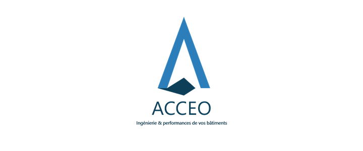
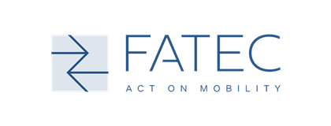
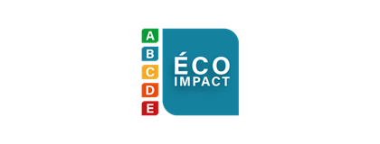
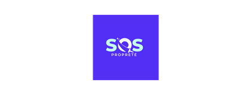
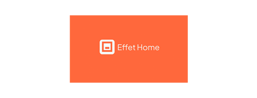
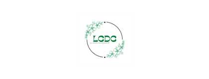
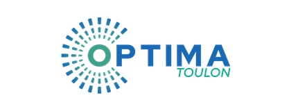

J’aime rendre les idées plus faciles à comprendre.
Un bon contenu ne sert pas juste à publier. Il aide une personne à mieux expliquer ce qu’elle sait faire.







J’aide à transformer des idées, des savoir-faire ou des problématiques métier en contenus clairs, systèmes d’acquisition et workflows simples à utiliser.
Structurer des systèmes de prospection simples, mesurables et adaptés à une cible précise.
Voir le cas 02Créer des workflows pour gagner du temps, organiser les données et fluidifier les opérations marketing.
Voir le cas 03Mettre en forme les idées d’un professionnel pour les rendre plus claires, utiles et attractives.
Voir le casUn bon contenu ne sert pas juste à publier. Il aide une personne à mieux expliquer ce qu’elle sait faire.
Chaque projet est une occasion de tester, produire, mesurer et améliorer progressivement.
Je ne cherche pas à vendre une image d’expert. Je montre ce que je construis, ce que j’apprends et comment je progresse.
Chaque projet me permet de travailler une compétence précise : contenu, acquisition, automatisation, données ou stratégie marketing.
Ciblage, enrichissement, séquences de prospection, suivi des réponses et amélioration progressive du message.
Ouvrir l’étude Data opsComprendre une expertise métier pour la transformer en message plus clair.
Contenu & stratégieStructurer une idée floue en système concret, testable et améliorable.
Acquisition & organisationApprendre rapidement de nouveaux outils pour les transformer en workflows utiles.
Automatisation & outilsJe suis ouvert aux opportunités professionnelles, collaborations freelance, projets de contenu et missions marketing digital.
Je cherche des projets où je peux apporter de l’exécution, de la curiosité et une vraie envie de progresser.
Discuter d’un projet